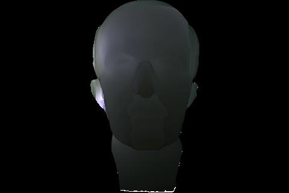
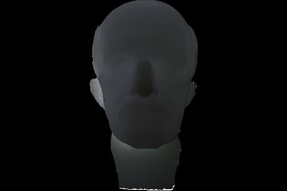
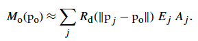
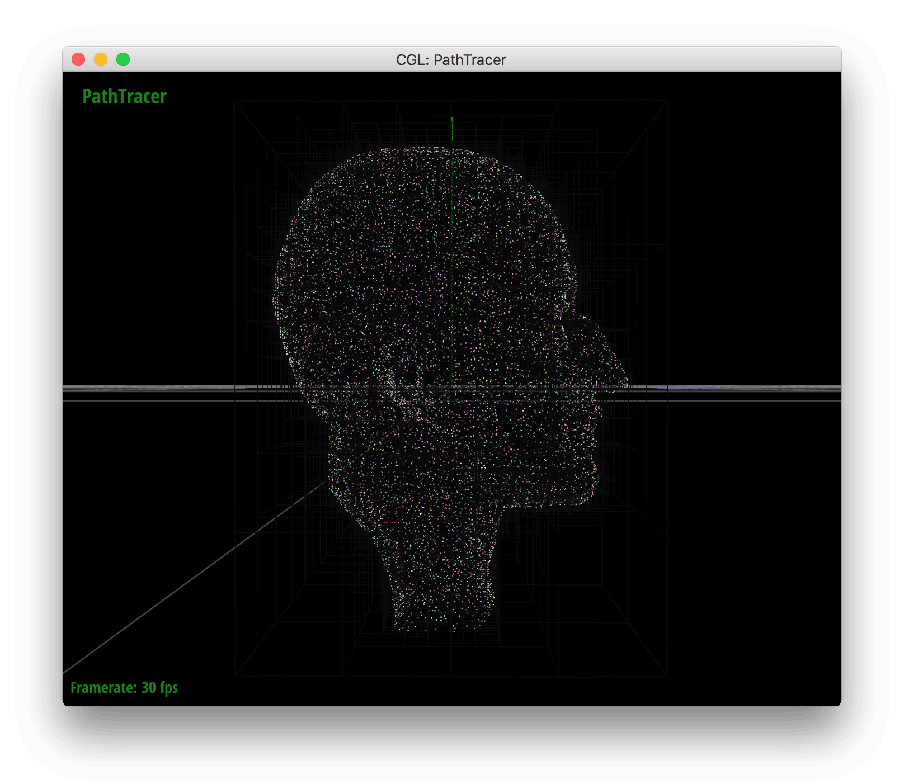

Octree
After all of the surface points are sampled, they are each inserted into an octree data structure. An octree node has 8 children, and each internal (non-leaf) node stores a luminance-weighted average of its children’s central point and irradiance values. It also stores the sum of its children’s area (which, at the leaves, is determined by area of the Poisson circles). Upon insertion, we navigate through the octree by comparing the to-be-inserted point to the midpoint of each internal node. By comparing x/y/z components, we get 2^3 = 8 possible children. If we reach a leaf that is not full, we insert the point into that leaf. If on the other hand the leaf is full, we convert the leaf to an internal node and re-insert each of the points originally associated with that leaf. When we convert the leaf to an internal node, the BBox of the child node has an x value, without loss of generality, ranging between the parent’s midpoint’s x-value to either the min or max x-value of the parent’s BBox. This logic is implemented in the octreeChildBound function.
After all points have been added to the octree, we recursively compute the irradiances, areas, and central points of the internal nodes via a luminance-weighted average of its children’s values. Upon query by the Mo function, we can adjust how deep into the Octree we go by specifying an error tolerance. The deeper into the octree we go, the more specific our diffuse approximations are - meaning the irradiance of fewer points influences the radiance at a query point. In terms of the Mo function described below, going deeper into the octree means we use a Pj (the stored midpoint for an internal node) that is likely closer to the query point, Ej (irradiance) is an average of less points, and Aj (area) will be smaller. Going deeper gives us less error, but also increases runtime.
|

High max error
|
Medium max error
|

Low max error
|
Mo
To calculate the outgoing radiance at an intersection point, the ray tracer’s direct lighting function calls the BSSRDF which uses its material properties to calculate outgoing irradiance. This irradiance is the radiant exitance, Mo, weighted by a fresnel term, assumed to be constant in a homogenous material. Mo is essentially all the contributing light coming from the area surrounding a point. Approximating what should be an integral as a sum:

Rd is the diffuse reflectance from the illumination single point, pj, on to the point we are calculating for, po. Since each point pj is really an area determined by our Poisson spheres, each point represents a small area with an average irradiance Ej and an area Aj. If there are many small areas, this can be a slow process to calculate each corresponding Rd. If the material does not vary much over a larger area, we can just use a larger area to calculate Rd. The min_dist and max_error are closely related, so they should be adjusted in tandem when looking for good results.
Visualizer
The octree visualizer uses similar functionality to the BVH visualizer. You can enter visualizer mode by pressing ‘O’. Keys 1-8 show children one through eight by pushing to a stack. Keyboard up returns to the parent by popping from stack. The points are colored according to which child they are. Here is a gif showing the octree visualizer:
